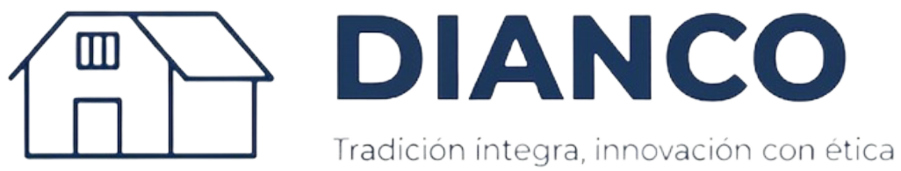
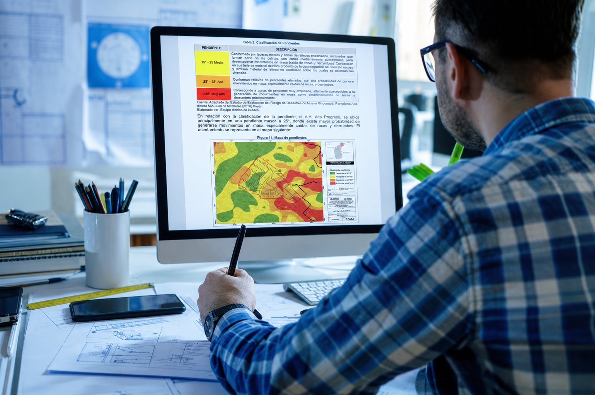
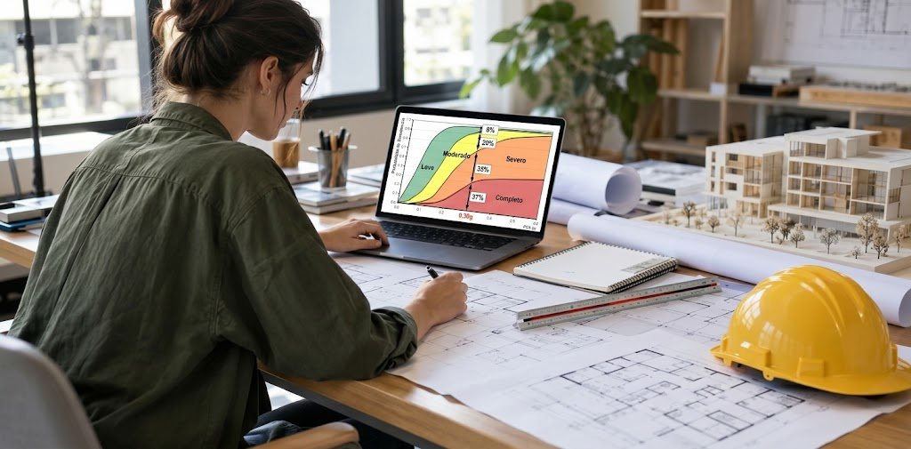
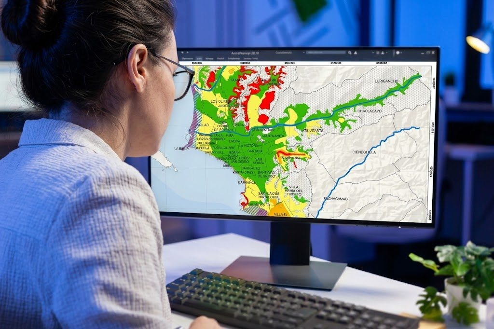
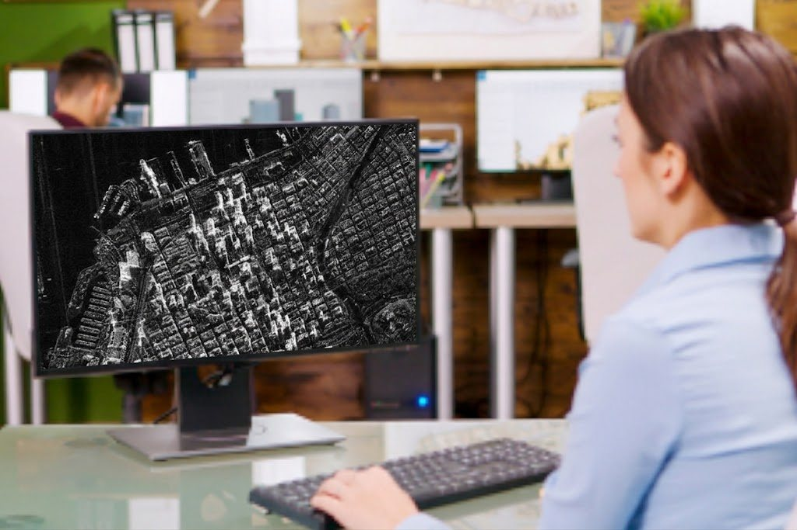

02 / CONSULTORÍA
Integramos investigación en ingeniería sísmica, patología estructural y análisis de vulnerabilidad para transformar la incertidumbre del territorio en infraestructura resiliente.


01 / EVALUACIÓN Y ESTRUCTURAS
Evaluaciones de vulnerabilidad, caracterización del peligro y análisis no lineal en infraestructura.

02 / GEOTECNIA Y TERRITORIO
Ensayos dinámicos de suelo y mapas de respuesta de sitio para una planificación y diseño estructural seguro.

03 / GEOTECNOLOGÍAS Y APLICACIONES
Fotogrametría con drones (UAV) y geotecnologías aplicadas al mapeo de peligros territoriales y la prevención de desastres.